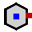
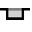
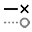

Τροποποίηση της γεωμετρίας
Με τη λειτουργία Κάμψη TecZone έχετε στη διάθεσή σας έναν πανίσχυρο επεξεργαστή σχεδίων 2D για την τροποποίηση, την εκκαθάριση ή την προσθήκη στη γεωμετρία σας. Χρησιμοποιήστε το πλήκτρο συντόμευσης S για να προσπελάσετε τη λειτουργία σχεδίασης. Ο επεξεργαστής προβάλλει το τεμάχιο σε αναδιπλωμένη προβολή.

Στην αναπτυγμένη προβολή, κάνετε κλικ στο εικονίδιο Εκκαθάριση  ή πατήστε το πλήκτρο
συντόμευσης S.
ή πατήστε το πλήκτρο
συντόμευσης S.
Ανοίγει ένα μενού με διάφορα εικονίδια για την επεξεργασία της αναδίπλωσης:
Πίνακας σχεδίασης
| Εικονίδιο | Σύμβολο | Σημασία |
|---|---|---|
Επιλογή |
Επιλογή αντικειμένων, γραμμών, καταχωρίσεων κ.λπ. |
|
|
Γραμμή |
Σχεδίαση μια γραμμής |
|
Συνδεδεμένες γραμμές |
Σχεδιάζει οποιονδήποτε αριθμό γραμμών |
|
Παράλληλες |
Σχεδιάζει μια παράλληλο σε μια γραμμή |
|
Normal |
Σχεδιάζει μια εφαπτομένη σε μια καμπύλη |
|
Γραμμή κάμψης |
Σχεδιάζει μια κανονική γραμμή σε μια γραμμή |
|
Τόξο κεντρικού σημείου |
Σχεδίαση μιας γραμμής κάμψης |
|
Κυκλικό τόξο 2 σημείων |
Σχεδιάζει ένα τόξο από ένα κεντρικό σημείο, ένα σημείο έναρξης και ένα σημείο τερματισμού |
|
Κυκλικό τόξο 3 σημείων |
Σχεδιάζει ένα κυκλικό τόξο μέσω δύο καθορισμένων σημείων (σημείο έναρξης και τερματισμού) |
|
Εφαπτόμενο κυκλικό τόξο |
Σχεδιάζει ένα τόξο που εφάπτεται στα στοιχεία σχεδίασης |
|
Ορθογώνιο |
Σχεδιάζει ένα ορθογώνιο |
|
Κεντρικό σημείο-ορθογώνιο |
Σχεδιάζει ένα ορθογώνιο από το κέντρο |
Κύκλος |
Σχεδιάζει έναν κύκλο. Επιλέξτε το κεντρικό σημείο του κύκλου και σύρετε το δρομέα για να ορίσετε την ακτίνα ή καταχωρίσετε μια τιμή για την ακτίνα |
|
|
Περιφέρεια με 2 σημεία |
Σχεδιάζει έναν κύκλο σύμφωνα με την περιφέρεια. Επιλέξτε ένα σημείο στην την περιφέρεια και μετά ένα δεύτερο σημείο και ένα τρίτο σημείο. |
|
Περιφέρεια με 3 σημεία |
Σχεδιάζει έναν κύκλο σύμφωνα με την περιφέρεια. Επιλέξτε ένα σημείο στην την περιφέρεια και μετά ένα δεύτερο σημείο και ένα τρίτο σημείο. |
|
Κύκλος με 2 εφαπτομένες |
Σχεδιάζει έναν κύκλο με δύο εφαπτόμενες. Καταχωρίστε τη διάμετρο του κύκλου, στη συνέχεια επιλέξτε την πρώτη εφαπτομένη και μετά τη δεύτερη εφαπτομένη. |
|
Κύκλος με 3 εφαπτομένες |
Σχεδιάζει έναν κύκλο με τρεις εφαπτόμενες. Καταχωρίστε τη διάμετρο του κύκλου και στη συνέχεια επιλέξτε την πρώτη εφαπτομένη, μετά τη δεύτερη εφαπτομένη και μετά την τρίτη εφαπτομένη. |
|
Κεντρικό σημείο - γωνιακό σημείο πολυγώνου |
Σχεδιάζει έναν κύκλο με τρεις εφαπτόμενες. Καταχωρίστε τη διάμετρο του κύκλου και στη συνέχεια επιλέξτε την πρώτη εφαπτομένη, μετά τη δεύτερη εφαπτομένη και μετά την τρίτη εφαπτομένη. |
 |
Κεντρικό σημείο πολυγώνου – κέντρο πλευρικής ακμής |
Σχεδιάζει ένα πολύγωνο. Καθορίστε τον αριθμό των πλευρών και επιλέξτε ένα κεντρικό σημείο και το μέσο μιας πλευρικής ακμής |
|
Πολύγωνο με πλευρική ακμή |
Σχεδιάζει ένα πολύγωνο. Καθορίστε τον αριθμό των πλευρών και ορίστε το σημείο έναρξης και ένα σημείο τερματισμού μιας πλευράς. |
|
Στρογγύλεμα |
Στρογγυλοποιεί τη γωνία στο γωνιακό σημείο δύο στοιχείων σχεδίασης με μια καταχωρισμένη ακτίνα, με την οποία δημιουργείται ένα εφαπτομενικό τόξο |
|
Λοξότμηση |
Δημιουργεί μια λοξοτομή στη γωνία της διασταύρωσης δύο στοιχείων σχεδίασης |
|
Κοπή γωνίας, στρογγυλεμένη |
Αποκόπτει τη γωνία στη διασταύρωση δύο στοιχείων σχεδίασης με μια καταχωρισμένη ακτίνα |
|
Κοπή γωνίας, γωνιώδης |
Αποκόπτει τη γωνία στη διασταύρωση δύο στοιχείων σχεδίασης με ένα ορθογώνιο. Το μέγεθος του ορθογωνίου μπορεί να καταχωριστεί εκ των προτέρων. |
 |
Ελεύθερη κοπή, τετράγωνο |
Δημιουργεί μια ορθογώνια ελεύθερη τομή. Πρέπει να καταχωρίσετε την απόσταση γωνίας, το ελεύθερο βάθος κοπής και στη συνέχεια επιλέξτε μια γωνία. |
|
Ελεύθερη κοπή, διαμήκης οπή |
Δημιουργεί μια ελεύθερη τομή με σχήμα επιμήκους οπής. Πρέπει να καταχωρίσετε απόσταση γωνίας, το πλάτος της ελεύθερης τομής, βάθος ελεύθερης τομής και, στη συνέχεια, επιλέξτε μια γωνία. |
|
Ελεύθερη κοπή, τρίγωνο |
Δημιουργεί μια τριγωνική ελεύθερη τομή. Πρέπει να καταχωρίσετε την απόσταση γωνίας, το ελεύθερο πλάτος τομής, το ελεύθερο βάθος τομής και, στη συνέχεια, επιλέξτε μια γωνία. |
|
Κλειδαρότρυπα |
Δημιουργεί μια κλειδαρότρυπα σε έναν κύκλο με τις καταχωρισμένες τιμές. |
|
Πλήρες στρογγύλεμα 3 τμημάτων |
Στρογγυλοποιεί τρία συνδεδεμένα στοιχεία σχεδίασης |
|
Επιμήκυνση στοιχείου |
Επιλέξτε το στοιχείο σχεδίασης που πρόκειται να επεκταθεί |
|
Κοπή στοιχείου |
Επιλέξτε το στοιχείο σχεδίασης που πρόκειται να περικοπεί |
|
Συγχώνευση |
Χρησιμοποιείται για να περικόψει και να ενώσει πολλές ανεξάρτητες πολλαπλές γραμμές σε μία |
|
Στοιχεία μετατόπισης |
Μετατόπιση ενός ή περισσοτέρων στοιχείων σχεδίασης, άκρων σχεδιασμένων μοντέλων ή επιφανειών μοντέλων κατά μια καθορισμένη απόσταση |
|
Μετακίνηση |
Επιλέξτε ένα στοιχείο σχεδίασης με το ctrl επιλέξτε ένα σημείο αναφοράς και μετακινήστε το στοιχείο σχεδίασης |
|
Περιστροφή |
Επιλέξτε ένα στοιχείο σχεδίασης με το ctrl επιλέξτε ένα κεντρικό σημείο περιστροφής και, στη συνέχεια, ένα σημείο έναρξης και ένα σημείο τερματισμού για την περιστροφή του στοιχείου σχεδίασης |
Κλιμάκωση |
Επιλέξτε ένα στοιχείο σχεδίασης με το ctrl επιλέξτε ένα σημείο βάσης και, στη συνέχεια, ένα σημείο έναρξης αναφοράς και ένα τερματικό σημείο αναφοράς για να καθορίσετε την κλίμακα του στοιχείου σχεδίασης |
|
|
Κατοπτρισμός |
Επιλέξτε ένα στοιχείο σχεδίασης με το ctrl και μετά το σημείο έναρξης της γραμμής κατόπτρισης και στη συνέχεια, το σημείο τερματισμού της γραμμής κατόπτρισης για την κατόπτριση του στοιχείου σχεδίασης |
|
Γραμμικό σχέδιο |
Χρησιμοποιήστε γραμμικά μοτίβα για να δημιουργήσετε πολλαπλά βαθμονομημένα αντίγραφα ενός ή περισσότερων στοιχείων σχεδίασης που μπορείτε να τοποθετήσετε σε ίσες αποστάσεις κατά μήκος ενός ή δύο γραμμικών διαδρομών. Κάνετε κλικ στο γραμμικό μοτίβο και καταχωρίστε τις επιθυμητές τιμές |
|
Κυκλικό σχέδιο |
Χρησιμοποιήστε κυκλικά μοτίβα για να δημιουργήσετε πολλαπλά βαθμονομημένα αντίγραφα ενός ή περισσότερων στοιχείων σχεδίασης που μπορείτε να τοποθετήσετε σε ίσες αποστάσεις γύρω από έναν άξονα. Κάνετε κλικ στα κυκλικά μοτίβα και καταχωρίστε τις επιθυμητές τιμές |
|
Συνδυασμός επιφανειών |
Επιλέξτε δύο ή περισσότερα κλειστά σχεδιασμένα στοιχεία για να συνδυάσετε επιφάνειες μεταξύ τους |
|
Επιφάνεια τομής |
Επιλέξτε δύο ή περισσότερα κλειστά στοιχεία σχεδίασης για να δημιουργήσετε μια περιοχή κοπής επιλεγμένων στοιχείων |
|
Κοπή επιφάνειας |
Επιλέξτε δύο ή περισσότερα κλειστά στοιχεία σχεδίασης για να περικόψετε την επιφάνεια |
|
Αντιγραφή ελεύθερης κοπής |
Μπορείτε να δημιουργήσετε πολλαπλά αντίγραφα μιας εγκοπής κατά μήκος μιας ακμής, χρησιμοποιώντας αυτό το εργαλείο. Καταχωρίστε πρώτα το διάστημα μεταξύ των αντιγράφων και τον αριθμό των αντιγράφων της εγκοπής που θέλετε να δημιουργήσετε. Στη συνέχεια, επιλέξτε την εγκοπή κάνοντας κλικ στα παρακείμενα στην εγκοπή τμήματα δύο γραμμών |
|
Διαγραφή ελεύθερης κοπής |
Μπορείτε να διαγράψετε μια εγκοπή σε μια γωνία ή κατά μήκος ενός τμήματος γραμμής χρησιμοποιώντας αυτό το εργαλείο. Κάνετε κλικ στα παρακείμενα στην εγκοπή τμήματα δύο γραμμών και η εγκοπή αφαιρείται |
|
Κατοπτρισμός ελεύθερης κοπής |
Μπορείτε να κατοπτρίσετε μια εγκοπή σε μια γωνία ή κατά μήκος ενός τμήματος γραμμής, χρησιμοποιώντας αυτό το εργαλείο. Κάνετε κλικ στα παρακείμενα στην εγκοπή τμήματα δύο γραμμών και η εγκοπή κατοπτρίζεται |
|
Σειρά καμπυλών |
Για να ξεκινήσετε μια νέα σφήνα, κάνετε κλικ στο σημείο έναρξης και καθώς κάνετε κλικ στα επόμενα σημεία, θα δημιουργηθεί η σφήνα. Εάν θέλετε να κλείσετε τη σφήνα, πατήστε το πλήκτρο ALT και στη συνέχεια, κάνετε κλικ |
|
Προφίλ |
Πληκτρολογήστε το μήκος της βάσης, το ύψος της φλάντζας, το πάχος, τη γωνία της φλάντζας, την εσωτερική ακτίνα και πατήστε enter για να δημιουργήσετε ένα προφίλ |
|
Κείμενο |
Χρησιμοποιείται για τη σχεδίαση κειμένου που θα επισημανθεί στο τεμάχιο από το μηχάνημα λέιζερ. Όταν κάνετε κλικ σε αυτό το κουμπί εργαλείου, η γραμμή καταχώρισης προβάλλει τα πλαίσια καταχώρισης για το κείμενο, το μέγεθος, και η γωνία περιστροφής |
|
Κείμενο |
Χρησιμοποιείται για τη λήψη των σχημάτων των χαρακτήρων σε οποιαδήποτε γραμματοσειρά TrueType και τη μετατροπή τους σε πολλαπλές γραμμές. Τα εργαλεία λέιζερ μπορούν στη συνέχεια να εφαρμοστούν σε αυτές τις πολλαπλές γραμμές και μπορούν να κοπούν.Την πρώτη φορά που κάνετε κλικ σε αυτό το κουμπί, εμφανίζεται το παράθυρο διαλόγου Γραμματοσειρά, παρέχοντάς σας τη δυνατότητα να επιλέξετε τη γραμματοσειρά που θα χρησιμοποιηθεί για το κείμενο |
|
Βασικές φόρμες |
Χρησιμοποιείται για τη δημιουργία πολλών κοινών σχημάτων και την εισαγωγή τους στο σχέδιο. Όταν κάνετε κλικ σε αυτό το κουμπί, εμφανίζεται το παράθυρο διαλόγου Δημιουργία σχήματος που σας παρέχει τη δυνατότητα να επιλέξετε από την παλέτα των κοινών σχημάτων που παρατίθενται |
|
Απλή διάσταση |
Επιλέξτε το πρώτο σημείο διαστασιολόγησης και, στη συνέχεια, το δεύτερο σημείο διαστασιολόγησης και τη θέση της γραμμής διαστασιολόγησης |
|
Διάσταση αναφοράς |
Επιλέξτε το πρώτο σημείο διαστασιολόγησης και, στη συνέχεια, το δεύτερο σημείο διαστασιολόγησης και τη θέση της γραμμής διαστασιολόγησης |
|
Αλυσιδωτές διαστάσεις |
Επιλέξτε το πρώτο σημείο διαστασιολόγησης και, στη συνέχεια, το δεύτερο σημείο διαστασιολόγησης, τη θέση της γραμμής διαστασιολόγησης και επιλέξτε το επόμενο σημείο διαστασιολόγησης |
|
Οριζόντια διάσταση τεταγμένων |
Οι τεταγμένες διαστάσεις είναι ένα σύνολο διαστάσεων που μετρώνται από την τεταγμένη μηδέν στο σχέδιο. Επιλέξτε ένα σημείο αναφοράς και τοποθετήστε τη διαστασιολόγηση |
 |
Κάθετη διάσταση τεταγμένων |
Οι τεταγμένες διαστάσεις είναι ένα σύνολο διαστάσεων που μετρώνται από την τεταγμένη μηδέν στο σχέδιο. Επιλέξτε ένα σημείο αναφοράς και τοποθετήστε τη διαστασιολόγηση |
|
Διάσταση γωνίας |
Δημιουργεί μια διαστασιολόγηση για μια γωνία. Επιλέξτε την πρώτη γραμμή και, στη συνέχεια, τη δεύτερη γραμμή στην οποία θέλετε να διαστασιολογήσετε τη γωνία |
|
Διάσταση ακτίνας |
Δημιουργεί μια διαστασιολόγηση για μια ακτίνα. Επιλέξτε τον κύκλο στον οποίο θέλετε να διαστασιολογήσετε την ακτίνα. Διαστασιολόγηση της διαμέτρου με ctrl |
|
Διάσταση ακτίνας με συνεχή βοηθητική γραμμή |
Δημιουργεί μια διαστασιολόγηση με συνεχές μέτωπο για μια ακτίνα. Επιλέξτε τον κύκλο στον οποίο θέλετε να διαστασιολογήσετε την ακτίνα. Διαστασιολόγηση της διαμέτρου με ctrl |
|
Σημείωση |
Χρησιμοποιήστε το για να προσθέσετε σημειώσεις στο σχέδιο με τη μορφή περιγραφών. Για να δημιουργήσετε μια περιγραφή, πληκτρολογήστε το κείμενο που θα εμφανιστεί, κάνετε κλικ για να επισημάνετε πού πρέπει να είναι στραμμένο το βέλος, και κάνετε κλικ ξανά για να επισημάνετε πού πρέπει να τοποθετηθεί το κείμενο. |
|
Διάσταση τμήματος |
Χρησιμοποιήστε το για να προσθέσετε διαστασιολόγηση για ευθεία γραμμή και καμπύλα τμήματα. Κάνετε κλικ στο τμήμα για διαστασιολόγηση και κάνετε κλικ ξανά για να τοποθετήσετε τη διάσταση. Ή κρατήστε πατημένο το και κάνετε κλικ σε ένα τμήμα για να τοποθετήσετε αυτόματα τη διάσταση. |